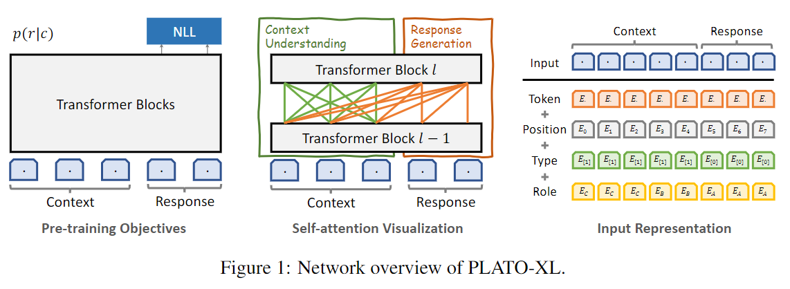
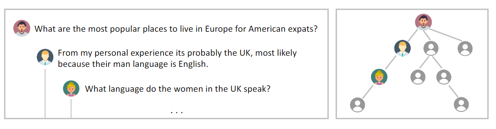
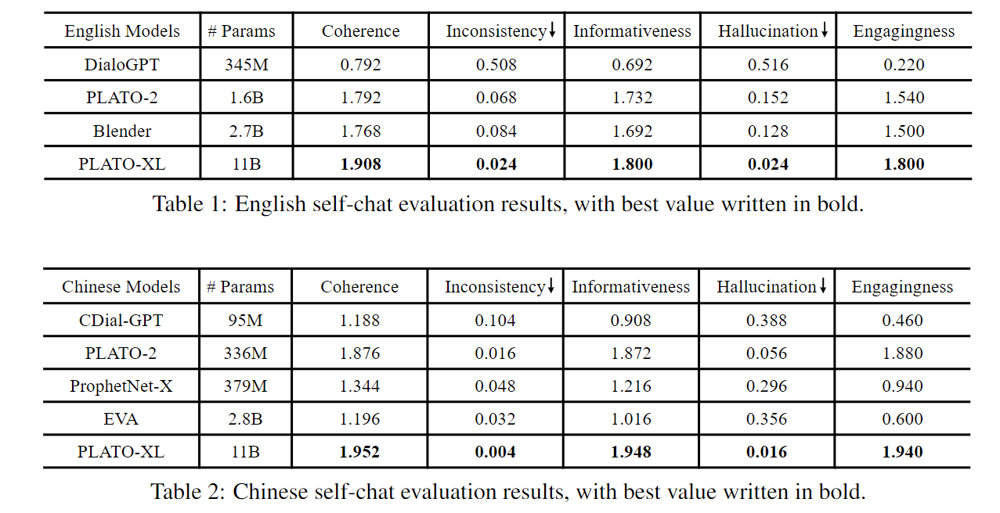
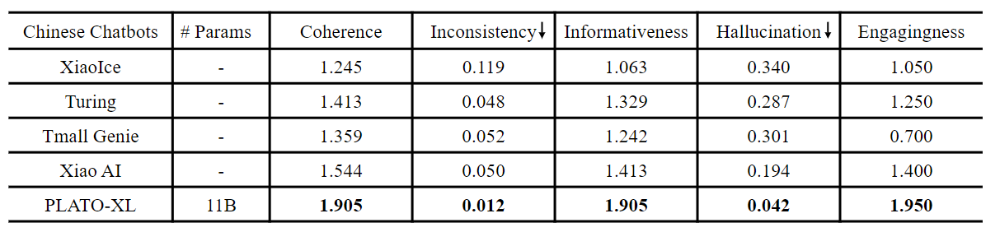
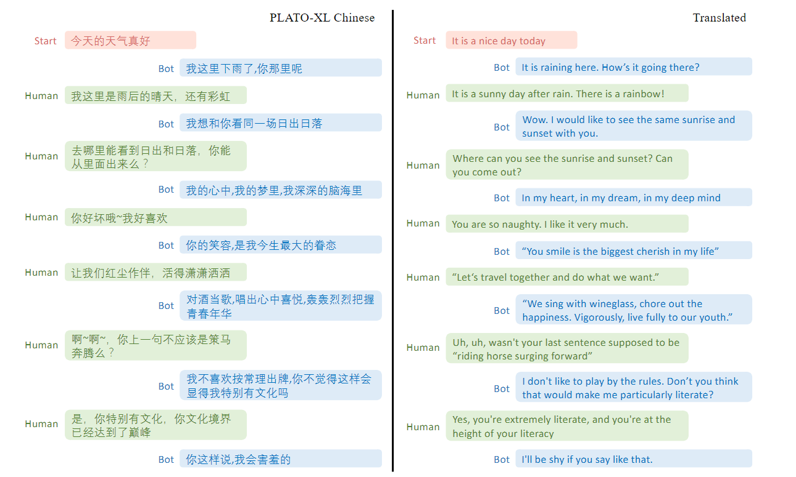
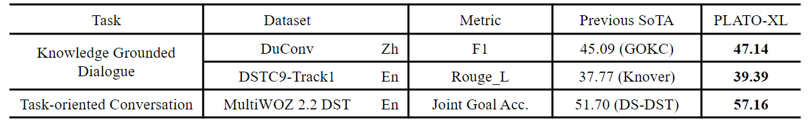

PLATO-XL
前言
PLATO-XL 是百度于 2021 年发布的论文《PLATO-XL: Exploring the Large-scale
Pre-training of Dialogue
Generation》中提出的模型，旨在探索大规模预训练对话生成任务的效果，在中英文的多项对话任务上取得了 SOTA。目前，百度提供了百度PLATO 微信公众号服务，可供试用。经笔者测试，PLATO 的效果要远优于微软小冰。因此今天来读下这篇论文。
下图是微信公众号二维码，大家可以自行体验。
简介
近些年来，预训练模型的共识是更大的模型 + 更好的数据 = 更好的效果。但是，在对话预训练领域，DialoGPT 的 345M 版本要优于 762M，Blender 的 2.7B 版本要优于 9.4B 的版本，这些反常的现象让人怀疑模型的规模和生成效果是否有清晰的结论关系。本论文指出，对话质量可能还是受益于模型规模，前提是合适的预训练设计。
PLATO-XL 使用 unified Transformer 的架构进行训以提高参数效率，并实行了” 多角色意识预训练 “用于区分人物信息。据论文所述，多角色意识预训练能够显著减少多轮对话中的不一致性。论文的英文模型和推理脚本开源在了 github 上，没有开源训练脚本、中文模型等。这很百度。
实验结果表明，PLATO-XL 不仅在开放域闲聊任务取得了 SOTA，也可用于微调后应用于任务型对话、知识增强对话场景，同样取得了 SOTA 效果。
PLATO-XL
网络结构
PLATO-XL 的架构如下图所示，使用 Unified Transformer 的 Seq2Seq 的训练方法。将输入和输出以 [SEP] 间隔，输入内部计算双向 self-attention，输入 - 输出间存在 cross-attention，输出间为单侧的 mask-attention。这种做法的优点是参数利用率高，同一套参数即用来编码又用来解码，得到的模型的泛用性也强。

多角色意识预训练
这个名字听着很玄乎，其实思想很简单。从社交媒体中搜集的数据一般如下图所示。多个用户的连续回帖构成了多轮对话。但是由于每个人的性格、观念等的不同，直接拿去训练多轮对话容易产生不一致性。因此 PLATO 引入了角色嵌入（role embedding）来解决这个问题，将角色嵌入和句子向量相加即可。如上面的图所示。

预训练设置
数据集：
- 英文：来自 Reddit，由第三方收集公开于 pushshift.io 上，使用 PLATO-2 的精细清洗流程。训练集为 2005 年到 2019 年的 811M 个样本。词汇表包含 8k BPE token，使用 SentencePiece 构建。
- 中文：数据集来自社交媒体，清洗后包含 1.2B 训练样本，词表包含 30k BPE token。
PLATO-XL 拥有 11B 参数，使用了 72 个 Transformer 和 32 个注意力头，嵌入维度为 3072，前馈层的隐藏状态为 18432。为了训练的稳定性，PLATO-XL 参考 GPT2 将 Layer Normalization 提前到块开始，并对残差层初始参数进行缩放 \(*1/\sqrt N\)，N 为残差层数量。
PLAOT-XL 基于飞桨实现，使用了 256 块 32G V100 进行训练。受限于显存，11B 模型无法容纳在单张卡中，标准的数据并行无法进行。因此将优化器状态、梯度、参数分别保存在不同设备，以减少通信并提高计算效率。为了提高 batch size，论文还使用了梯度检查点，即不保存一部分前向过程中的激活值，在反向传播时重新计算，用时间换空间。
实验
基线
- DialoGPT：Reddit 评论， 345M 参数。
- Blender：Reddit 评论预训练 + 人工注释对话数据（BST）微调，2.7B 参数。
- PLATO-2：使用课程学习方法训练。英文：Reddit 评论 + BST 微调，1.6B 参数。中文：1.2B 社交媒体数据集，336M 参数。
- CDial-GPT：LCCC 数据集，95.5M 参数。
- ProphetNet-X：豆瓣数据集，379M 参数。
- EVA：1.4B 数据，2.8B 参数。
此外，论文还与公开的中文聊天机器人：微软小冰、图灵机器人、天猫精灵、小爱同学进行了对比。
评估指标
在开放域对话中，自动化指标和人工平板的相关性很小，因此论文主要通过众包平台进行人工评估。
- 连贯性（Coherence）：话语级指标，回复是否与上下文相关和一致。
- 信息性（Informativeness）：话语级指标，给定上下文的情况下，回复是否有信息。
- 参与度（Engagingness）：会话级指标，用户是否愿意与机器人持续聊天。
上述三个指标取值为 [0,1,2]，分数越高越好。为了进一步分析对话质量，还有两个更细粒度的评估指标：
- 不一致性（Inconsistency）：细粒度评估连贯性，回复是否与上下文冲突。
- 错觉（Hallucination ）：细粒度评估信息性，回复是否存在事实性错误。
这两项指标取值为 [0,1]，越小越好。
实验结果
实验结果如下图所示。可以看到 PLATO-XL 在所有指标上都是最优的。但是仅看中文指标，PLATO-XL 和 PLATO-2 的差别却不大，数据规模均为 1.2B，二者可能使用的是同一套数据集。二者的主要差别在不一致性和错觉这两项指标上，其他三项指标差距均不足 0.1，但模型规模差了 30 倍。
另一个角度看，PLATO-2 是 2020.1 登录 arxiv，EVA 是 2021.10 登录 arxiv，相差近两年，EVA 的模型和数据集的规模都大于 PLATO-2，在论文中表现却全线弱于 PLATO-2。不过 EVA 论文中也未与 PLATO-2 直接比较。这就比较微妙了，要么是 PLATO 的 UniLM 框架要优于 EVA 的 Seq2Seq，要么就是 PLATO 的数据集质量更好。


Case Study
论文给出了一个对话样例。大家也可以自行去微信公众号体验。

下面这张图是网上的体验图，可以看到基本可以达到以假乱真的地步。我自己试用的过程中，也激发了 PLATO 的四川话属性。相较于微软小冰，对话质量和体验提升可以说是巨大的。
其他对话任务
将 PLATO-XL 微调后用于任务型对话和知识增强对话，在三个数据集上达到了 SOTA 效果，证实了 PLATO-XL 作为对话 AI 的基础模型的潜力。

总结
PLATO-XL 的效果确实是非常惊艳，但是代码、数据、模型全部闭源，就 emmmm。模型出于商业角度不开源，数据出于知识产权角度不开源，这篇论文最大的影响就是证实了中文闲聊场景大模型的上限是很高的，但是怎么达到这个上限，我不告诉你。
英文模型反倒可以开源，毕竟百度也不做国外的生意，开源英文模型和推理脚本，论文应该才更容易接收。